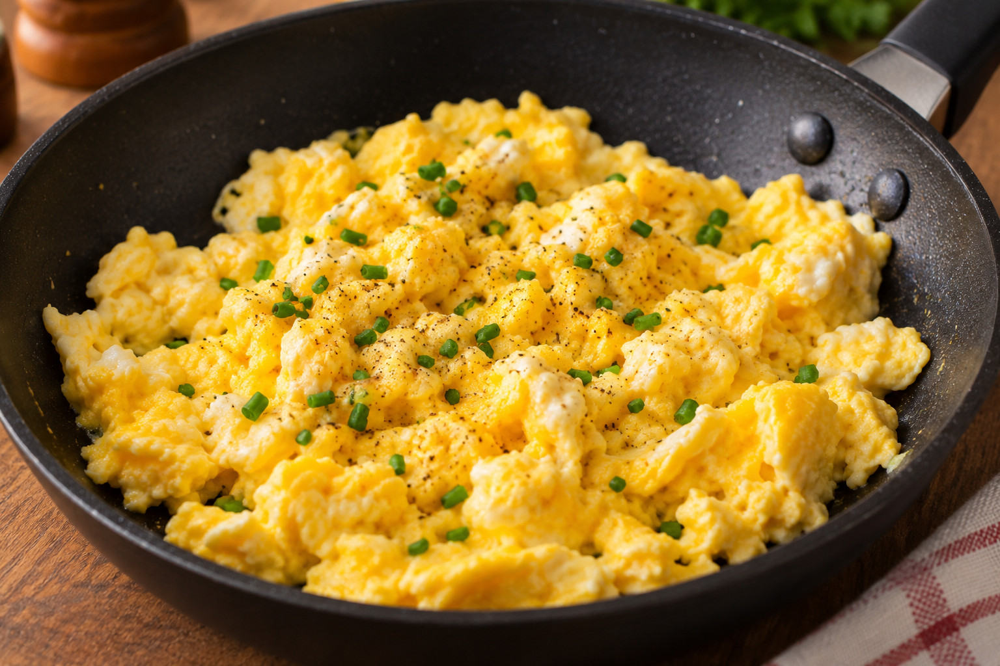

Or just go back.

Scrambled eggs are a timeless breakfast favorite, loved for their simplicity, versatility, and deliciously creamy texture. Quick and easy to prepare, they're perfect for starting your morning with a satisfying meal. Enjoy them on their own or pair them with freshly baked French bread or crispy toast for an even more delicious breakfast. Whether you're making a quick weekday meal or enjoying a relaxed weekend morning, this classic recipe is always a great choice!
Start by finely chopping the onion. Heat a teaspoon of olive oil in a non-stick frying pan over medium-low heat, then add the onion and sauté for a few minutes until soft and slightly golden. Crack the two eggs directly into the pan and sprinkle with a pinch of salt. Using a spatula, gently break the yolks and stir the eggs together with the onion. Continue stirring until soft curds form and the eggs reach your preferred consistency. Remove from the heat, transfer to a plate, and serve immediately with fresh French bread or crispy toast. Enjoy!
More recipes at our homepage.